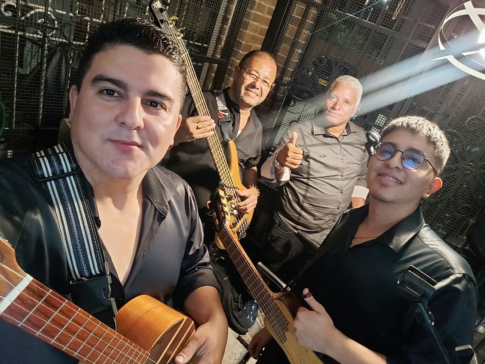
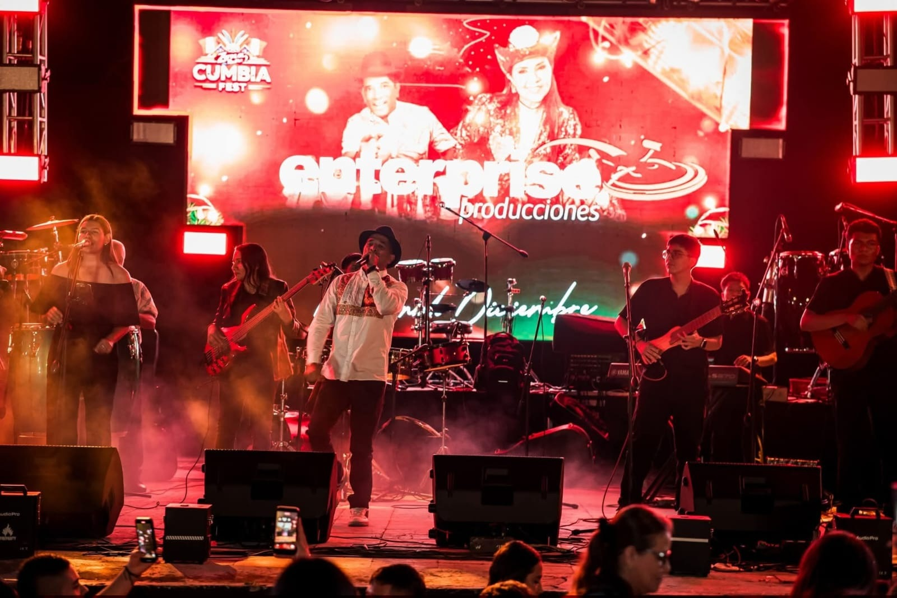
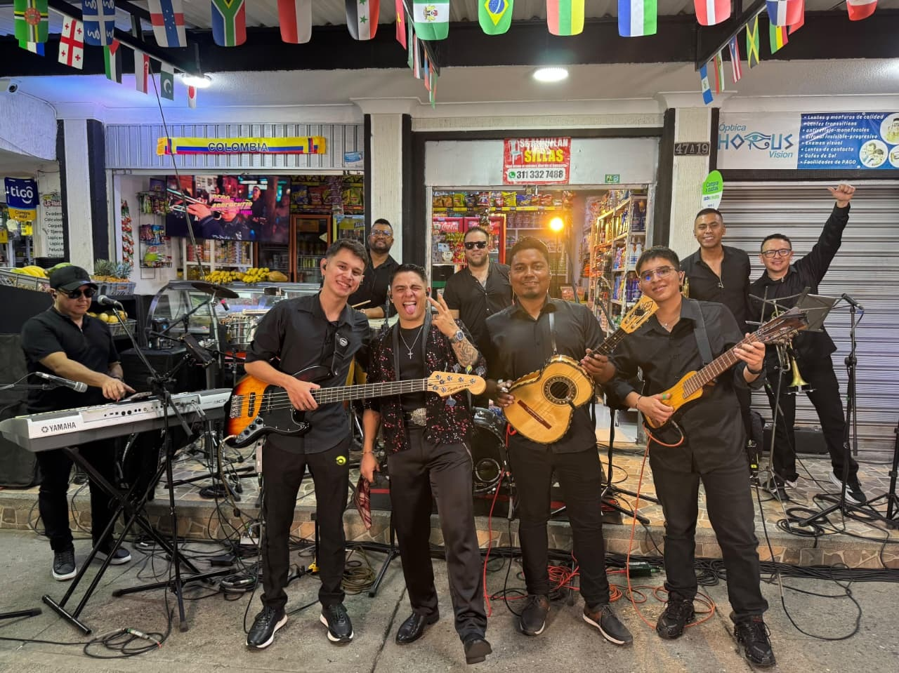
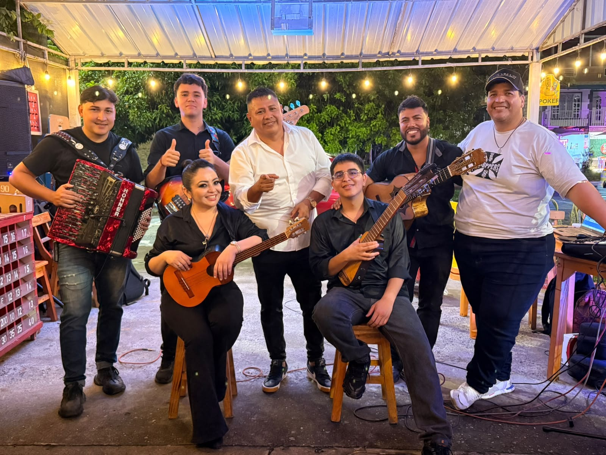
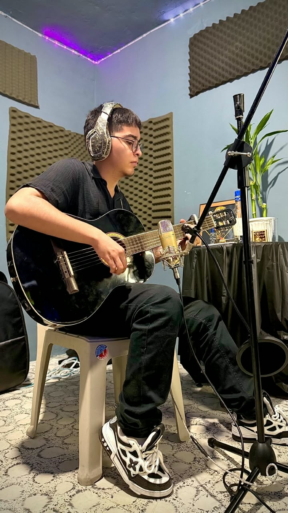
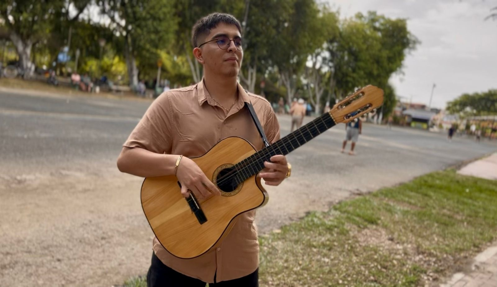

Serenatas
Música en vivo para celebrar momentos especiales.
Propuestas musicales para eventos, encuentros y proyectos artísticos.

Música en vivo para celebrar momentos especiales.

Participación musical en eventos y escenarios.

Requinto y acompañamiento instrumental para artistas y proyectos.

Participación en proyectos y encuentros con otros músicos.

Servicios de grabación y participación instrumental.

Consulta disponibilidad y detalles para tu evento o proyecto.